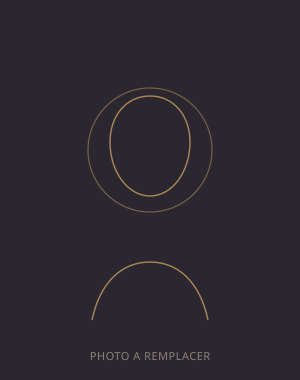

Retrouver le fil de ce qui compte vraiment pour vous.
Consultations de médiumnité, soins énergétiques, accompagnement chamanique et formations, pour avancer avec plus de clarté et d'ancrage.texte à ajuster

Bonjour, je suis [Prénom Nom].
Quelques lignes de présentation : votre parcours, la manière dont vous accompagnez les personnes, ce qui vous a menée vers ces pratiques. Deux ou trois phrases suffisent ici, le détail complet trouve sa place dans la page « À propos ».
contenu à compléter
Lire le parcours completLes accompagnements proposés
Quatre approches, à choisir selon ce dont vous avez besoin aujourd'hui.
Guidance & médiumnité
Consultations pour éclairer une question précise, une période de doute ou une décision à prendre.
Soins énergétiques
Rééquilibrer les tensions physiques et émotionnelles, retrouver de l'espace et de la vitalité.
Chamanisme
Un accompagnement plus profond, ancré dans des pratiques traditionnelles de reconnexion.
Formations
Apprendre à votre tour à développer votre sensibilité et vos propres outils.